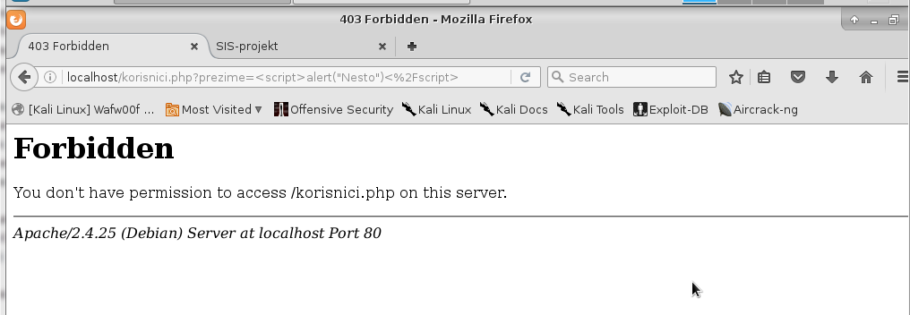

Mod Security
Autor: Žana Zekić
Sadržaj |
UVOD
Mod_securiy je Apache modul namijenjen podizanju razine sigurnosti Apache Web poslužitelja. Djeluje kao sustav za detekciju i prevenciju neovlaštenih aktivnosti koje su usmjerene prema poslužiteljima te pripadajućim aplikacijama. Program sadrži brojne mogućnosti koje administratorima olakšavaju zaštitu poslužitelja od raznih malicioznih aktivnosti. Mod_Securiry može blokirati SQL Injection napade. Kako bi detektirao napade Mod_security skenira sve zahtjeve i odgovore koji dođu na server te ona koji su poslani na server. Ako je zahtjev važeći tada se prosljeđuje sadržaju stranice. Nevažeći zahtjevi se blokiraju te se izvode određene akcije koje će biti kasnije navedene. Mod_security modul radi na Apache poslužitelju 2.x te ne zahtijeva određene inačice poslužitelja za ispravan rad. (prema: Ristić)
POVIJEST
Do ideje izrade ovog alata prvi došao je Ivan Ristić, a njegova prva verzija izdana je u studenom 2002. godine, ali je prošlo nekoliko mjeseci prije nego je alat postao koristan. Nakon toga popularnost ModSecurityja samo je rasla. 2006. godine ModSecurity mogao je parirati ostalim web aplikacijskim vatrozidima te je postao veoma cijenjen. ModSecurity 2.0. izdane je pri kraju 2006. godine. Najveći pomak dogodio se 2008. godine te je izdan Mod Security 2.5. Od tada je izašlo nekoliko verzija, a danas je stabilna verzija 2.9.1 koja je izašla u ožujku 2015. godine. (prema: Ristić)
OSNOVNE KARAKTERISTIKE
- Presretanje i pregledavanje svih HTTP/HTTPS zahtjeva
- Mogućnost detekcije naprednih metoda zaobilaženja IDS sustava
- Mogućnost detekcije napada koji se baziraju na kodiranju URL adresa
- Mogućnost kreiranja vlastitih pravila, pri čemu je moguće korištenje regularnih izraza
- Izvršavanje posebno definiranih akcija nakon detekcije napada
- Detaljno, korisnički podesivo bilježenje svih zahtjeva
(prema: CarNet)
FUNKCIONALNOSTI MOD_SECURITYJA
- Parsiranje: pokušava dati smisao što je moguće većem broju podataka. Podržani formati datoteka su podržani od strane security-conscientious parsera koji ekstraktiraju bitove podataka i spremaju ih za upotreba u pravilima.
- Buffering: kod tipične instalacije i odgovor i zahtjev biti će spremljeni u međuspremnik. To bi značilo da ModSecurity vidi kompletan zahtijev prije nego ga pošalje aplikaciji na procesiranje te dovrši odgovor prije nego ga pošalje klijentu. Buffering je vrlo važan jer je jedini način da se pruži pouzdano blokiranje. Međutim, postoji i mana jer se zahtijava dodatni RAM kako bi se spremili zahtjevi i odgovori.
- Logging: logging je veliki dio od onoga što Mod_Security radi. Ono omogućava da se spremi HTTP promet umjesto samog pristupa log informacijama. Ono što pruža jest pristup zaglavlju zahtijeva, tijelu zahtijeva, zaglavlju odgovora te tijelu odgovora. Ova funkcionalnost pruža potpuno kontrolu.
- Rule Engine: nakon nekog vremena rule engine započinje s obavljanjem operacija. Zahtijeva bitove i dijelove podataka koje će biti spremne za inspekciju. Pravila će se preuzeti kako bi se procijenile transakcije te poduzele akcije ako je to potrebno.
(prema: ModSecurity.org)
UTJECAJ NA WEB SERVERE
ModSecurity mijenja način na koji web server radi. Povećat će se potrošnja CPU-a i RAM-a na serveru gdje je pokrenut ModSecurity. U nastavku slijede neke od aktivnosti koje povećavaju potrošnju resursa. ModSecurity će se pridružiti parsiranju koje je već obavljene od strane Apachea što rezultira laganim povećanjem potrošnje CPU-a. Kompleksnija parsiranja tipa XML imat će veću posljedicu. Parsiranje troši i RAM zato što se ekstraktirani elementi moraju kopirati na svoje posebno mjesto. Tijela odgovora i zahtijeva su često spremljena u međuspremnik kako bi se omogućilo pouzdano blokiranje. Nadalje, svako pravilo uzet će nešto vremena od vremena CPU-a te nešto RAM-a. Sve u svemu, ModSecurity generalno koristi minimalno resursa kako bi izvodio željene funkcionalnosti, no ako želite više onda je potrebno osigurati i bolju konfiguraciju.
(prema: Ristić)
ŽIVOTNI CIKLUS TRANSAKCIJE
U ModSecurityu svaka transakcija prolazi kroz pet faza. U svakoj od njih ModSecurity napravi određeni posao na početku, pozove pravila specificirana da rade u toj fazi te eventualno napravi nešto prije nego faza pravila bude gotova. U nastavku će biti pobliže objašnjena svaka od faza.
1.Request Headers Ova faza je polazna točka za ModSecurity. Svrha ove faze jest dopustiti pravilima da procijene zahtijev prije nego procesiranje tijela odgovora bude poduzeto.
2.Request Body Ova faza jest većinom analitička te počinje odmah nakon što se primi i procesira cjelokupno tijelo zahtijeva. Pravila u ovoj fazi imaju sve dostupne podatke zahtijeva.
3.Response Headers Ova faza započinje kada zaglavlje odgovora bude dostupno, ali prije nego tijelo odgovora bude pročitano. Pravila moraju odlučiti trebali li ispitati tijelo odgovora u ovoj fazi.
4.Response Body Ovo je pretežno analitička faza. Do vremena kada ova faza započne tijelo odgovora će biti pročitano, sa svim svojim podacima koji će biti dostupni pravilima za donošenje njihovih odluka.
5.Logging Ova faza dosta je specifična. Ova faza je jedina iz koje se ne može blokirati. Do vremena kada faza počne sve transakcije biti će dovršene stoga je bilježenje jedino što se može napraviti. Pravila u ovoj fazi se pokreću kako bi kontrolirali kada je logging dovršen.
Ukratko životni ciklus odvija se na sljedeći način. ModSecurity je prvo pozvan od strane Apachea nakon što je zaglavlje zahtijava postalo dostupno, ali prije nego je tijelo zahtijeva pročitano. Prvo dolazi inicijalizacijska poruka koja sadrži jedinstveni ID generiran od strane mod_unique_id. ModSecurity će parsirati informacije u na liniju zahtijeva i u zaglavlje zahtijeva. ModSecurity će napravit kontekst te pozvati fazu Request Header. Podrazumijevajući da pravilo nije blokiralo transakciju, ModSecurity će vratiti kontrolu Apacheu dopuštajući drugim modulima da procesiraju zahtijev prije nego se kontrola vrati. U drugoj fazi ModSecurity će prvo pročitati te procesirati tijelo zahtijeva ako postoji. U primjeru se mogu vidjeti tri poruke u ulaznom filteru koje govore što je pročitano. Četvrta poruka govori koji parametar je izvađen iz tijela zahtijeva. Tip sadržaja u odgovoru je onaj kojeg ModSecurity prepoznaje i automatski parsira. Nakon što je tijelo zahtijeva procesirano pravila Request Bodyja mogu početi. Nakon što su sva pravila odrađena, ModSecurity će nastaviti sa spremanjem tijela zahtijeva u međuspremnik, nakon čega se pokreću pravila Response Bodyja. Ukoliko nijedno pravilo nije blokirano, akumulirano tijelo odgovora će biti proslijeđeno klijentu. Nakon toga slijedi faza Logging. Prvo će biti pokrenuta njegova pravila nakon čega će njegov podsustav pozvati bilježenje transakcija ako je to potrebno. Poruka iz audit logginga podsustava je zadnja poruka transakcije u logu. Ako se prikaže na primjer Audit log: Ignoring a non-relevant request to znači da ModSecurity nije našao ništa zanimljivo u transakcijama te nema potrebe za bilježenjem.
(prema: Ristić)
INSTALACIJA
Instalacija ovisi o verziji Apache Web poslužitelja te o platformi na kojoj je Web poslužitelj koristi. Mod_securiti modul za Apache poslužitelj moguće je skinuti s njihove službene stranice ([1]). Tamo se nalazi u dva oblika kao izvršna datoteka ili kao izvorni kod.
INSTALACIJA IZ IZVORNOG KODA
Kod ovakve instalacije prva od opcija jest integriranje modula u sam Web poslužitelj. Na taj način postiže se nešto brže izvršavanje, ali je postupak instalacije složeniji jer se zahtijeva ponovno prevođenje Apache poslužitelja. Jednostavniji način je prevesti mod_security kao dinamički dijeljeni objekt te ga kao takvog uključiti putem konfiguracijske datoteke Apache poslužitelja.
Najprije je potrebno instalirati Apache Server, MySql te PHP.
1) Instalacija Apache poslužitelja
sudo apt-get update sudo apt-get install apache2
2) Instalacija MySQL
sudo apt-get install php7.0 php7.0-fpm php7.0-mysql –y <br> sudo mysql_install_db
Start MySQL
sudo /etc/init.d/mysqld start
Napraviti vezu kao ovu i dati ju sustavu
ln -s /tmp/mysql.sock /var/lib/mysql/mysql.sock
Instalacija
sudo /usr/bin/mysql_secure_installation
3) Instalacija PHP
sudo apt-get install php7.0 libapache2-mod-php7.0 php7.0-mcrypt
Otvaranje conf datoteke
sudo nano /etc/apache2/mods-enabled/dir.conf
Dodati index.php te mora izgledati ovako:
<IfModule mod_dir.c>
DirectoryIndex index.php index.html index.cgi index.pl index.php index.xhtml index.htm
</IfModule>
4) PHP moduli
Nakon sljedeće naredbe otvori se lista modula:
apt-cache search php7-
Izaberu se moduli koji se žele instalirati:
sudo apt-get install name of the module
5) PHP na serveru
Otvaranje info.php datoteke
sudo nano /var/www/info.php
Dodati sljedeću liniju
<?php phpinfo(); ?>
Ponovno pokrenuti apache kako bi promjene imale utjecaja
sudo service apache2 restart
(prema: Sverdlov)
Nakon toga može se krenuti sa instalacijom mod_securitya
1) Instalacija
apt-get install libapache2-modsecurity
Provjeriti da je učitan mod_security modul
apachectl -M | grep --color security
Instalacija sadrži preporučene konfiguracijske datoteke koje moraju biti preimenovane
sudo mv /etc/modsecurity/modsecurity.conf-recommended /etc/modsecurity/modsecurity.conf
Na kraju je potrebno ponovno učitati Apache
service apache2 reload
Sada se može vidjeti nova log datoteka za mod_security u Apache log direktoriju
root@kali:~# ls -l /var/log/apache2/modsec_audit.log -rw-r----- 1 root root 0 Jan 8 14:05 /var/log/apache2/modsec_audit.log
2) Konfiguracija Inicijalna konfiguracija je postavljena da se bilježe samo oni zahtjevi koji zadovoljavaju pravilo Detection Only, ali to se može promijeniti uređivanjem sljedeće datoteke
nano /etc/modsecurity/modsecurity.conf <pre>SecRuleEngine DetectionOnly mijenja se u SecRuleEngine On
Mijenjanjem sljedećeg reda možemo uštedjeti memorije je se trenutačno sva tijela odgovora spremaju u međuspremnik
SecResponseBodyAccess On mijenja se u SecResponseBodyAccess Off
Sljedećom promjenom može se postaviti limit tijela zahtijva na 12.5 MB
SecRequestBodyLimit 13107200
Sljedećom linijom može se zadati vrijednost limita veličine POST podataka minus učitana datoteka (u ovom slučaju 128KB)
SecRequestBodyNoFilesLimit 131072
Sljedećom linijom određuje se koliko podataka tijela zahtijeva se treba čuvati u memoriji (RAM), a sve drugo se premiješta na hard disk.
SecRequestBodyInMemoryLimit 131072
(prema: Jesin)
INSTALACIJA POMOĆU IZVRŠNE DATOTEKE
Prilikom instalacije modula kada je izvršna verizija već dostupna i nije potrebno prevođenje izvornog koda. Instalacija se odvija sljedećim redoslijedom:
- Kopiranje mod_security.so datoteke (Linux računala), odnosno mod_security.dll datoteke (Windows računala) u direktorij libexec/
- Dodavanje nove opcije u httpd.conf datoteku
LoadModule security_module libexec/mod_security.so
(prema: CarNet)
KONFIGURACIJA
Konfiguracija mod_security modula odvija se preko httpd.conf datoteke. Da bi Apache Web poslužitelj koristio ovaj modul potrebno ga je u konfiguracijskoj datoteci uključiti. To se čini pomoću <IfModule> direktive na sljedeći način:
IfModule mod_security.c>
#popis pravila
...
</IfModule>
Tijelo direktive potrebno je popuniti popisom mod_security sigurnosnih pravila. Unose se samo one direktive koje se žele koristiti, dok za one koje se ne koriste postoje inicijalne vrijednosti.
(prema: CarNet)
Konfiguracijske direktive
- Uključivanje filtriranja
Inicijalno filtiranje je isključeno. Da bi se omogućilo potrebno je: SecFilterEngine On Vrijednosti ovog parametra su sljedeće On (analiza svih zahtjeva), Off (ne analizira se nijedan zahtjev), DynamicOnly(analiza samo onih zahtijeva koji su generirani dinamički za vrijeme izvođenja.
- Provjera POST sadržaja
Oni sadržaji koji se prosljeđuju POST metodom ne analiziraju se sve dok se ne uključi odgovarajuća direktiva. Ovo je preporučeno uključiti zato što se POST metodom većinom šalju podaci koji korisnici unose putem formi, a upravo se većina napada provodi tako da se na formi proslijedi maliciozni niz koji će iskoristiti ranjivost unutar aplikacije. Direktiva se uključuje na sljedeći način : SecFilterScanPOST On
- Provjera URL kodiranja
Napadači često koriste razne znakove kako bi izbjegli sigurnosne mjere. Tako ModSecurity omogućava provjeru valjanosti kodiranja URL niza, a uključuje se na sljedeći način: SecFilterCheckURLEncoding On
- Vidljivost modula
Napadač ne može znati koristi li web poslužitelj mod_security modul ili ne. On ne ispisuje nikakve informacije o svom postojanju već dopušta poslužitelju da korisniku vrati standardne poruke. Ukoliko se ipak korisniku želi dati do znanja da se korisni mod_security modul to se može učiniti postavljanjem sljedeće direktive: SecServerResponseToken On Na administratoru je da odluči želi li prikazivati ovu informaciju ili ne. Ukoliko ju prikaže možda napadač krene u potragu za lakšom metom jer će vidjeti da se ova nadzire ili može izazvati suprotan učinak da on traži nove načine da zaobiđe prepreku i u izvršenju svog cilja.
- Otkrivanje grešaka
Kod otklanjanja grešaka koriste se dvije direktive. Prva je za određivanje datoteke u koju će biti zapisan izlaz otkrivanja grešaka: SecFilterDebugLog logovi/mod_security_debug_log te direktiva koja određuje koliko će detaljan biti ispis: SecFilterDebugLevel 0. Koliko će ispis biti detaljan određuje broj od 0 do 3. 0 označava da se ne bilježi ništa, 1 da se bilježe samo značajni događaji, 2 da se bilježe sve poruke, 3 bilježe se poruke sa dodatnim informacijama. (prema: CarNet)
- Audit Log Level
Ove postavke određuju kako će se pratiti transakcije. Mogu se izabrati neke od opcija: Bilježenje svih transakcija, ne praćeni niti jedne transakcije ili samo bilježenje onih transakcija vrijednih pažnje. Direktiva je sljedeća SecAuditEngine koja služi za konfiguraciju audit engine-a koji bilježi završene transakcije. ModSecurity je trenutačno u mogućnosti bilježiti većinu, ali i ne sve transakcije. Transakcije koje uključuju pogreške (npr. 400 i 404 transakcije) koriste drugačije izvršne putanje, koje Mod_Security ne podržava. Moguće vrijednosti audit log-a su sljedeće: On(praćenje svih transakcija), Off(ne praćenje transakcija), RelevantOnly(bilježenje samo onih vrijednih pažnje).
- Connection Engine
Ove postavke određuju kako connection engine procesira pravila. Mogu se odabrati neke od sljedećih opcija: procesiranje pravila, ne procesiraj pravila ili procesiraj pravila u verbalnom načinu, ali ne izvrši one akcije koje remete rad. Direktiva: SecConnEngine -> služi za konfiguraciju connection engine-a. Ova direktiva utječe na SecConnReadStateLimit and SecConnWriteStateLimit direktive. Moguće vrijednosti su: On (procesiranje: SecConn[Read|Write]StateLimit), Off(Ignoriranje direktiva SecConn[Read|Write]StateLimit), DetectionOnly(procesiranje SecConn[Read|Write]StateLimit definicije u verbalnom načinu, ali nikad se ne izvršavaju akcije koje remete rad).
- Rules Engine
Postavke određuju kako rules engine procesira pravila. Mogu se odabrati neka od sljedećih pravila: Procesiraj pravila, Ne procesiraj pravila, Procesiraj pravila u verbalnom načinu, ali ne izvrši akcije koje remete rad. Direktiva: SecRuleEngine -> konfigurira rules engine. Moguće vrijednosti: On(procesiraj pravila), Off(ne procesiraj pravila), DetectionOnly(procesiraj pravila, ali nikad ne izvrši akcije koje remete rad (block, deny, drop, allow, proxy and redirect).
- Backend Compression
Ove postavke omogućavaju ili onemogućavaju backend kompresiju, ali ne utječu na frontend kompresiju. Ona je inicijalno podešena na Enabled. Direktiva: SecDisableBackendCompression koja onemogućuje backend kompresiju ostavljajući fronted kompresiju omogućenom. Ova direktiva je obavezna kod reverznog proxy načina kada backend serveri podržavaju tzv. response kompresiju, ali se želi istražiti tijelo odgovora. Ukoliko se ne onemoguću backend kompresija, ModSecurity će vidjeti samo kompresirani sadržaj, koji nije od velike koristi. Ova direktiva nije neophodna u embedded načinu, zato što ModSecurity obavlja inspekciju prije response kompresija započne.
- Geolocation Database
Omogućava specificiranje putanje baze geolokacije. Direktiva: SecGeoLookupDb koja definira put do baze koji će se koristiti za traženje geolokacija. Primjer: SecGeoLookupDb /path/to/GeoLiteCity.dat ModSecurity oslanja se na besplatnu bazu geolokacija (GeoLite City and GeoLite Country) koja se može dobiti s lokacije MaxMind.
- Google Safe Browsing Database
Omogućava specificiranje putanje baze Google-ovog sigurnog pretraživanja. Direktiva: SecGsbLookupDb koja definira putanju do baze koja će se koristiti za Google-ovo sigurno pretraživanje. Primjer: SecGsbLookupDb /path/to/GsbMalware.dat ModSecurity oslanja se na besplatnu bazu Google Safe Browsing koja se može naći kod Google-ovog GSB API-ja.
- Guardian Log
Omogućavaju prenošenje log informacija na eksternu aplikaciju za dodatnu analizu. Direktiva: SecGuardianLog koja konfigurira eksterne programa koje primaju informacije o svakoj transakciji putem cjevovoda. Primjer: SecGuardianLog |/usr/local/apache/bin/httpd-guardian
- Project Honey Pot Http:BL API Key
Postavke omogućuju dobavljanje Project Honey Pot Http:BL API ključa korisniku sa @rbl operatorom. API ključ se upisuje u tekstualno polje Project Honey Pot Http:BL API Key. Direktiva: SecHttpBlKey koja konfigurira korisnikovu registraciju Honeypot Project HTTP BL API ključa sa @rbl. Primjer: SecHttpBlKey whdkfieyhtnf
- Perl Compatible Regular Expressions Library Match Limit
Ove postavke određuju odgovorajući limit za PCRE biblioteku. Inicijalno je postavljen na 1500. Direktiva: SecPcreMatchLimit koja postavlja odgovarajući limit za PCRE biblioteku. Primjer: SecPcreMatchLimit 1500
- Perl Compatible Regular Expressions Library Match Limit Recursion
Ove postavke određuju odgovorajući limit rekurzije za PCRE biblioteku. Inicijalno je postavljen na 1500. Direktiva: SecPcreMatchLimitRecursion koa postavlja odgovarajući limit rekurzije za PCRE biblioteku. Primjer: SecPcreMatchLimitRecursion 1500 (prema: Chadwick)
Filtriranje zahtjeva
Svaki zahtjev koji dolazi mod_security presreće i analizira i tek onda ga prosljeđuje poslužitelju na izvršavanje. Kako bi se utvrdila valjanost zahtjeva provodi se niz ugrađenih provjera. One se mogu kontrolirati direktivama. Drugi dio sastoji se od niza pravila definiranih od strane administratora. Zaprimljeni zahtjevi uspoređuju se s nizom definiranih pravila. Najjednostavniji način filtriranja paketa je: SecFilter KLJUCNA_RIJEC Ključna riječ predstavlja znakovni niz koji mod_security traži u svakom upitu koji se prosljeđuje poslužitelju na izvršavanje. Pretraživanje se provodi samo nad prvom linijom HTTP upita u kojoj se nalazi sam upit, a u slučaju POST upita pretražuje se i sadržaj upita, ali pod uvjetom da je omogućena SecFilterScanPOST direktiva. (prema: CarNet)
Akcije
Postoji nekoliko tipova akcija koje je moguće izvršiti nakon detekcije ključne riječi u HTTP zahtjevu, a to su: primarna akcija (odlučuje hoće li se zahtjev proslijediti poslužitelju na izvršavanje te ona može biti samo jedna – deny, pass, redirect), sekundarna akcija (izvršit će se po uspješnom pronalasku ključne riječi bez obzira na primarnu te ih je moguće imati više) te akcije toka (mogu promijeniti slijed pravila što tjera mod_security da izvrši određenu akciju ili da preskoči par narednih akcija). (prema: CarNet)
POSTAVLJANJE AKCIJA
Provodi se nad svim upitima koji odgovaraju bilo kojem od definiranih pravila. SecFilterDefaultAction "deny,log,status:500" Postoje i akcije koje je moguće definirati u sklopu sigurnosnih pravila. Na primjer akcija pass dozvoljava prolaz zahtjeva iako isti odgovara jednom od definiranih sigurnosnih pravila, a allow propušta zahtjev bez provjere ostalih pravila. Deny blokira te se upit ne prosljeđuje poslužitelju na izvršavanje. Status omogućuje definiranje koda greške koji se klijentu vraća u slučaju kada je zahtjev blokiran. Redirect preusmjerava korisnika na zadanu URL adresu. Log bilježi zahtjeve na uspješan pronalazak riječi filtara u Apache log datoteku. (prema: CarNet)
TESTIRANJE MOD_SECURITY-JA NA PRIMJERU
Za potrebe testiranja napravila sam malu PHP aplikaciju na kojoj cu pokazati moguće napade te kako se od njih zaštiti pomoću Mod_securitya.
Korisnik u aplikaciju unosi svoje prezime te mu se nakon toga ispisu svi njegovi osobni podaci.
{kind=link}
{kind=link}
Stranica Index.php Na slici možemo vidjeti kod za ovu stranicu. Dakle koristi se metoda post kako bi se prenjeli parametri na stranicu korisnici.php. Koristi se metoda post kako korisnik ne bi mogao vidjeti paremetre koji se prenose.
{kind=link}
Stranica Korisnici.php Na slici možemo vidjeti kod za navedenu stranicu. Primamo s prethodne stranice parametar, odnosno prezime koje korisnik unese. Spajamo se s bazom te ako u bazi pronađemo odgovarajući podatak ispisujemo u tablicu sve informacije o korisniku.
{kind=link}
Primjer SQL Injection-a te njegovo sprječavanje
Na sljedećoj slici možemo vidjeti primjer jednog SQL Injection-a te se njime ispisuju svi korisnici koji se nalaze u tablici.

{kind=link}
Ovaj napad je prošao jer Mod_security nije bio uključen međutim ako postvimo u modsecurity.conf datoteci SecRuleEngine na On tada će nam se pokazati sljedeća stranica ako pokušamo izvesti napad.
{kind=link}
Za sprječavanje ovog napada nije bilo potrebno dodavati posebno pravilo nego samo SecRuleEngine postaviti na On jer se zajedno s Mod_security-jem instaliraju osnovna pravila ili kraticom CRS (Core Rule Set). Ova pravila nalaze se na mjestu /usr/share/modsecurity-crs/rules. Unutar CRS-a nalaze se pravila za sprječavanje sljedećih napada:
- SQL Injection (SQLi)
- Cross Site Scripting (XSS)
- Local File Inclusion (LFI)
- Remote File Inclusion (RFI)
- Remote Code Execution (RCE)
- PHP Code Injection
- HTTP Protocol Violations
- Shellshock
- Session Fixation
- Scanner Detection
- Metadata/Error Leakages
- Project Honey Pot Blacklist
- GeoIP Country Blocking
(prema: Owasp)
Primjer Cross Site Scripting napada
Ovo je tehnika zlonamjernih napada kojom napadač u korisničkom web pregledniku izvodi podmetnuti programski kod, što mu omogućuje prikupljanje različitih osjetljivih podataka dostupnih pregledniku. U nastavku smo pokušali napisati jednostavni kod, odnosno stavili smo u alert boxu da se ispiše "Nesto".
{kind=link}
Kako je Mod_Security ostao uključen, a u CRS-u se nalazi pravilo za ovu vrstu napada u pregledniku se ispisalo sljedeće: 
{kind=link}
Primjer pisanja vlastitih pravila
Kako bih napisala vlastito pravilo otvorila sam unutar modsecurity direktorija datoteku modsecurity_custom_rules.conf. Unutar nje napisala sam sljedeća pravila kako bi zabranila pristup stranici korisnika ako netko unese riječ "neko" ili "nista".
SecRule REQUEST_FILENAME "korisnici.php" "id:'200006',chain,deny,log,msg:'Nedopustena radnja'" SecRule REQUEST_METHOD "POST" chain SecRule REQUEST_BODY "@rx (?i:(netko|nista))"
Ovdje smo korisrili chain akcije kako bismo povezali varijable REQUEST_FILENAME s korisnici.php, REQUEST_METHOD s POST i REQUEST_BODY sa regularnim izrazom (@rx) unutar kojeg se nalae riječi netko i nista. Malo i označava da nije osjetljivo na velika i mala slova. Ako korisnik unese neku od ove dvije riječi onda će se blokirati pristup stranici te će se zabilježit radnja s porukom "Nedopustena radnja". Chain akcija simulira logičko I i povezuje sva tri pravila.
{kind=link}
{kind=link}
Vidimo da kada smo unijeli riječ nista da nam se zabranio pristup stranici korisnici.php.
Blokiranje svih IP adresa iz neke zemlje
Sljedeći kod se također napiše unutar modsecurity_custom_rules.conf. Na ovaj način blokirat će se sve IP adrese koje dolaze iz Kine te će se zabilježit ta aktivnost u log i zapisati poruka da se blokirala IP adresa iz Kine. Kod za kinu je CN.
SecRule REMOTE_ADDR "@geoLookup" "phase:1,chain,id:10,drop,log,msg:'Blokiranje IP adrese iz Kine'" SecRule GEO:COUNTRY_CODE "@streq CN"
(prema: Wallace)
PREDNOSTI I NEDOSTATCI MOD_SECURITY-JA
Prednosti:
- Lako upravljanje
- Besplatan
- Popraćen kvalitetnom dokumentacijom
Nedostaci:
- Konfiguracija se mora napraviti ručno
- Treba puno naučiti o sigurnosti
- Potrebno je puno znanja o protokolima
ZAKLJUČAK
ModSecurity ima mnoge prednosti i izrazito je dobar alat za zaštitu PHP aplikacija. Oni koji se prvi put susreću s ovim alatom vjerojatno će se susresti s mnogobrojnim problemima prilikom njegove konfiguracije, ali uz pomoć dokumentacije te izvora na internetu moguće je savladati korištenje ovog alata. Sva potrebna pravila mogu se pronaći u dokumentaciji, a puno toga se već nalazi u njegovim ugrađenim pravilima.
LITERATURA
[1] How To Install Linux, Apache, MySQL, PHP (LAMP) stack on Ubuntu, Sverdlov E, preuzeto s: https://www.digitalocean.com/community/tutorials/how-to-install-linux-apache-mysql-php-lamp-stack-on-ubuntu, 6.1.2017.
[2] How To Set Up mod_security with Apache on Debian/Ubuntu, Jesin A, preuzeto s: https://www.digitalocean.com/community/tutorials/how-to-set-up-mod_security-with-apache-on-debian-ubuntu 6.1.2017.
[3] How to Block Entire Countries from Accessing Your Website, Wallace Z, preuzeto s: https://www.sitepoint.com/how-to-block-entire-countries-from-accessing-website/ 18.1.2017.
[4] ModSecurity HandBook, Ristić I, preuzeto s: https://www.feistyduck.com/books/modsecurity-handbook/modsecurity-handbook-getting-started-may-2012.pdf, 7.1.2017.
[5] Mod security modul, CarNet, preuzeto s: http://www.cis.hr/www.edicija/LinkedDocuments/CCERT-PUBDOC-2004-02-63.pdf, 7.1.2017.
[6] OWASP ModSecurity Core Rule Set (CRS), Owasp, preuzeto s: https://www.owasp.org/index.php/Category:OWASP_ModSecurity_Core_Rule_Set_Project, 18.1.2017.
[7] Mod_Security .. Intro, Supportpro, preuzeto s: http://www.supportpro.com/blog/mod_security-intro/, 18.1.2017.
[8] Reference Manual, Chadwick M, preuzeto sa: https://github.com/SpiderLabs/ModSecurity/wiki/Reference-Manual, 7.1.2017.
[9] What Can ModSecurity Do?, ModSecurity.org, preuzeto s: https://modsecurity.org/about.html, 6.1.2017.